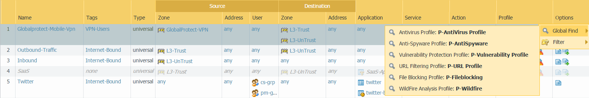
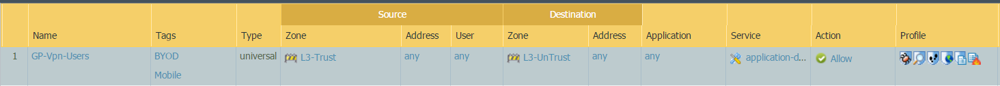

Does your IPS extend out to mobile devices and laptops?¶
If the company users mobile devices such as phones and laptops are to be protected from threat even if they are mobile in the company premise or remote at their home, client office etc they can be protected. If the mobile uesrs are in the company premises we have to make sure they are going out through Palo Alto networks firewall which has been configured with security policies that are designed to be protected from Antivirus, Anti spyware and Vulnerability. If the mobile users are remote they should be doing vpn through GlobalProtect and go through the Palo Alto networks firewall which has been configured with security policies that are designed to be protected from Antivirus, Anti spyware and Vulnerability.
Security Rules:
The rule name ‘Globalprotect-VPN-Users’ in the above image has the traffic coming from remote places connecting vpn through zone GlobalProtect-VPN and can access Trust network and Internet with secure content inspection through Antivirus, Anti spyware and Vulnerability profiles.
For mobile users in company network they can be associated with an internal zone such as L3-Turst as shown above and allow them to access internet securely with secure content inspection through Antivirus, Anti spyware and Vulnerability profiles.